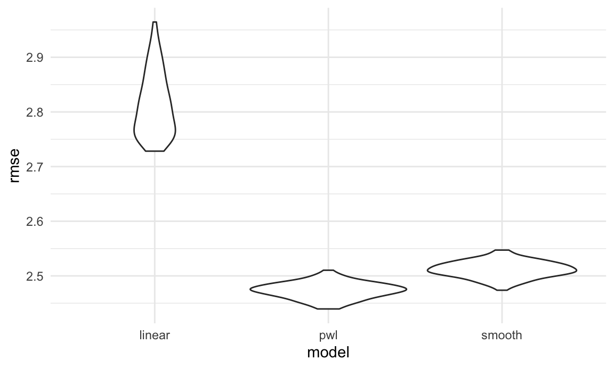

Report
library(tidyverse)## ── Attaching packages ───────────────────────────────────────────────────────────────── tidyverse 1.3.0 ──## ✓ ggplot2 3.3.2 ✓ purrr 0.3.4
## ✓ tibble 3.0.3 ✓ dplyr 1.0.2
## ✓ tidyr 1.1.2 ✓ stringr 1.4.0
## ✓ readr 1.3.1 ✓ forcats 0.5.0## ── Conflicts ──────────────────────────────────────────────────────────────────── tidyverse_conflicts() ──
## x dplyr::filter() masks stats::filter()
## x dplyr::lag() masks stats::lag()library(leaflet)
library(ggplot2)
library(plotly)##
## Attaching package: 'plotly'## The following object is masked from 'package:ggplot2':
##
## last_plot## The following object is masked from 'package:stats':
##
## filter## The following object is masked from 'package:graphics':
##
## layoutlibrary(readxl)
knitr::opts_chunk$set(
fig.width = 6,
fig.asp = .6,
out.width = "90%"
)
theme_set(theme_minimal() + theme(legend.position = "bottom"))
options(
ggplot2.continuous.colour = "viridis",
ggplot2.continuous.fill = "viridis"
)
scale_colour_discrete = scale_color_viridis_d
scale_fill_discrete = scale_fill_viridis_dwine_df =
read_csv(
"./wine_data/tidy/wine_all.csv")## Warning: Missing column names filled in: 'X1' [1]## Parsed with column specification:
## cols(
## X1 = col_double(),
## country = col_character(),
## description = col_character(),
## designation = col_character(),
## points = col_double(),
## price = col_double(),
## province = col_character(),
## region_1 = col_character(),
## taster_name = col_character(),
## title = col_character(),
## variety = col_character(),
## winery = col_character(),
## year = col_double(),
## new_world = col_logical(),
## old_world = col_logical(),
## type = col_character()
## )### remove region 2, taster twitter and missing values in region 1.
#wine_type <- read_csv("./wine_data/winemag-data-130k-v2.csv") %>%
# group_by(variety) %>%
# count() %>%
# arrange(desc(n)) %>%
# as.tibble()Your report should include the following topics. Depending on your project type the amount of discussion you devote to each of them will vary:
Motivation:
This dataset offers us a great opportunity to explore what factors are associated with wine ratings. We hope to conduct regression analysis of the wine rating and price based on location/grape type/notes/region and see if there are significant difference among these categorical predictors. The regression model would help customers estimate and predict wine rating with a series of wine characteristics. We also want to provide people with a interactive website to visualize wine ratings and prices.
Initial questions:
We are trying to answer some questions from exploratory analysis. To understand the information that customers could get from the ratings, price among different wine type and region, we want to answer the following questions:
What is the distribution of prices among four types of wine? Is at least one wine type’s price different from the others?
What is the distribution of ratings among four types of wine? Is at least one wine type’s rating different from the others?
What is the average price of wines at different regions? Which region has the highest average price wine?
What is the average rating of wines at different regions? Which region has the highest average rating?
What is the trend of price over time among 4 types of wine?
What is the trend of ratings over time among 4 types of wine?
What is the average ratings by each tasters? Who rates the highest price wine? Who reviews the largest number of wines?
Which winery has the top average ratings wine?
Is there any differences in prices between new world and old world wine?
Is there any differences in ratings between new world and old world wine?
Wine distribution worldwide:
- correspond to the world map
- correspond to the word cloud
- Linear model - predict Based on the information we have about a bottle of wine, how can we predict the price and points?
What questions are you trying to answer? How did these questions evolve over the course of the project? What new questions did you consider in the course of your analysis?
- Didn’t address yet - interactive plot (shiny)
- filter by price
- filter by country
- filter by wine type
Data:
Source, scraping method, cleaning, etc.
The data for this project is downloaded from Kaggle. It was scraped on November 22nd, 2017 from the WineEnthusiast Rating database. Wine Enthusiast is a magazine provide information on wine quality, wine variety, tours and events—in short - everything about wine.
This dataset contains 129971 wine reviews with variety, location, winery, price, description and reviewer information. There is much information on description and title on each wine. We had extracted from the text of useful information such as the year the wine was made in and the characteristics of the taste.
Variables of interest
## Vera in charge of editing this sectorOutcomes
price. Count of evictions (or eviction filings) per year at the census tract level.rating. Calculated using number of evictions or eviction filings divided by the number ofrenter_occupied_householdsand multiplied by 100, to be interpreted as a percentage.
Candidate Predictors
years_since_2010. Since our data range from 2010 to 2016, and we did not want to assume a constant effect of time, we included year as a set of indicator variables in all models except our empty model (see below).hisp. Percent of population (at census tract level, for all race/ethnicity variables) that self-report Hispanic ethnicity.white. Percent self-reporting White race.black. Percent self-reporting Black race.asian. Percent self-reporting Asian race.aian. Percent self-reporting American Indian / Alaska Native race.nhpi. Percent self-reporting Native Hawaiian / Pacific Islander race.other. Percent self-reporting other race.rent_burden. Average percent of income spent on rent.density. Population density.pct_eng. Percent of population who speak English less than ‘Very Well’. This is interpreted as a proxy for percent English as a second language (ESL) speakers.median_household_income. Median census tract household income in USD.poverty_rate. Percent living below Federal Poverty Line (FPL).median_gross_rent. Median census tract gross rent in USD.pct_renter_occupied. Percent of census tract occupied by renters.median_property_value. Median census tract property value in USD.family_size. Average family size in census tract.pct_fam_households. Percentage of census tract households that contain families.
At first, the dataset contains more than 50 wine varieties and it is hard to get useful information. Therefore, we had categorized all varieties to four types of wine: red, white, rose and sparkling according to the following infographics on Wine Folly.
Exploratory analysis:
Descriptive Statistics
Distribution of price/rating by wine type
Question: What is the distribution of prices/rating among four types of wine? Is at least one wine type’s price/rating different from the others?
To explore this question, we first look at the wine with price lower than $100 since there are many very expensive wine and it is hard to show the distribution with a very long tail. We want to graph a boxplot of prices for each of the four types of wine: red, rose, sparkling and white. It is interesting to see that red and sparking wine have similar distribution with mean price around $27. The prices of rose are lower than the other three types and are mostly round $10~$20. In addition, we run an ANOVA test to find if at least one of the wine types’e price is different from the others.
We repeat the same process to ratings. The results for price and ratings are both significant. Therefore, we can conclude that there is at least one wine type’s price/rating significantly different from the others.
This inform further modeling to see if we can based on the type of wine to predict its price and rating.
wine_df %>%
filter(!is.na(type),
price <= 100) %>%
ggplot(aes(x = type, y = price, color = type)) +
geom_boxplot()wine_price =
wine_df %>%
filter(price <= 100)
res.aov <- aov(price ~ type, data = wine_price)
summary(res.aov)## Df Sum Sq Mean Sq F value Pr(>F)
## type 3 2948351 982784 2791 <2e-16 ***
## Residuals 106267 37418807 352
## ---
## Signif. codes: 0 '***' 0.001 '**' 0.01 '*' 0.05 '.' 0.1 ' ' 1
## 11338 observations deleted due to missingnesswine_df %>%
filter(!is.na(type)) %>%
rename(rating = points) %>%
ggplot(aes(x = type, y = rating, color = type)) +
geom_boxplot()res.aov <- aov(points ~ type, data = wine_df)
summary(res.aov)## Df Sum Sq Mean Sq F value Pr(>F)
## type 3 16593 5531 597.3 <2e-16 ***
## Residuals 117650 1089353 9
## ---
## Signif. codes: 0 '***' 0.001 '**' 0.01 '*' 0.05 '.' 0.1 ' ' 1
## 12317 observations deleted due to missingnessDistribution of price/rating by region
y <- list(
title = "Mean Price"
)
wine_df %>%
filter(!is.na(price)) %>%
group_by(country) %>%
summarise(mean = mean(price)) %>%
mutate(country = fct_reorder(country, mean),
mean = round(mean, 2),
text_label=str_c("Country:", country, "\nmean price:", mean)) %>%
plot_ly(
x = ~country, y = ~mean, color = ~country, text = ~text_label,
type = "bar", colors = "viridis") %>%
layout(yaxis = y)y <- list(
title = "Mean rating"
)
wine_df %>%
filter(!is.na(points)) %>%
group_by(country) %>%
summarise(mean = mean(points)) %>%
mutate(country = fct_reorder(country, mean),
avg_rating = round(mean, 2),
text_label=str_c("Country:", country, "\nmean rating:", mean)) %>%
plot_ly(
x = ~country, y = ~avg_rating, color = ~country, text = ~text_label,
type = "bar", colors = "viridis") %>%
layout(yaxis = list(range = c(80,95)))Trend of price/rating over time
wine_df %>%
filter(!is.na(price),
!is.na(type),
year > 2000) %>%
group_by(year,type) %>%
summarise(mean = mean(price)) %>%
mutate(mean = round(mean, 2)) %>%
ggplot(aes(x = year, y = mean, color = type))+
geom_point()+
geom_line() +
labs(y = "Mean price",
x = "Year",
title = "change in mean price by wine type in 21 century")wine_df %>%
filter(!is.na(points),
!is.na(type),
year > 2000) %>%
group_by(year,type) %>%
summarise(mean = mean(points)) %>%
mutate(mean = round(mean, 2)) %>%
ggplot(aes(x = year, y = mean, color = type))+
geom_point()+
geom_line() +
labs(y = "Mean rating",
x = "Year",
title = "change in mean ratings by wine type in 21 century")Average wine ratings by taster.
y <- list(
title = "Mean ratings"
)
wine_df %>%
filter(!is.na(points)) %>%
group_by(taster_name) %>%
summarise(mean = mean(points)) %>%
mutate(taster_name = fct_reorder(taster_name, mean),
mean = round(mean, 2),
text_label=str_c("Taster:", taster_name, "\nmean rating:", mean)) %>%
plot_ly(
x = ~taster_name, y = ~mean, color = ~taster_name, text = ~text_label,
type = "bar", colors = "viridis") %>%
layout(yaxis = list(range = c(80,95)))Who rates the highest price wine?
We want to know the tasters that rated wines with price greater than $800.Most of the most expensive wine are rated by Roger Voss.
wine_df %>%
filter(price >= 800,
!is.na(taster_name)) %>%
group_by(taster_name) %>%
summarise(number_of_wine = n()) %>%
arrange(desc(number_of_wine)) %>%
knitr::kable()| taster_name | number_of_wine |
|---|---|
| Roger Voss | 24 |
| Joe Czerwinski | 3 |
| Anne Krebiehl MW | 1 |
| Kerin O’Keefe | 1 |
| Matt Kettmann | 1 |
Who reviews the largest number of wines?
Roger Voss rates most number of wine at WineEthusiast Magazine.
wine_df %>%
filter(!is.na(taster_name)) %>%
group_by(taster_name) %>%
summarise(number_of_wine = n()) %>%
arrange(desc(number_of_wine)) %>%
knitr::kable()| taster_name | number_of_wine |
|---|---|
| Roger Voss | 25514 |
| Michael Schachner | 15134 |
| Kerin O’Keefe | 10776 |
| Virginie Boone | 9537 |
| Paul Gregutt | 9532 |
| Matt Kettmann | 6332 |
| Joe Czerwinski | 5147 |
| Sean P. Sullivan | 4966 |
| Anna Lee C. Iijima | 4415 |
| Jim Gordon | 4177 |
| Anne Krebiehl MW | 3685 |
| Lauren Buzzeo | 1835 |
| Susan Kostrzewa | 1085 |
| Mike DeSimone | 514 |
| Jeff Jenssen | 491 |
| Alexander Peartree | 415 |
| Carrie Dykes | 139 |
| Fiona Adams | 27 |
| Christina Pickard | 6 |
Which winery has the top average ratings wine?
Araujo in the US has the highest average rating of 98. Among the top 10 wineries, four of them are in the US and four of them are in the France.
wine_df %>%
filter(!is.na(winery)) %>%
group_by(winery,country) %>%
summarise(mean = mean(points)) %>%
arrange(desc(mean)) %>%
head(n = 10) %>%
knitr::kable()| winery | country | mean |
|---|---|---|
| Araujo | US | 98.00000 |
| Gandona | US | 97.00000 |
| J.L. Chave | France | 97.00000 |
| Ovid | US | 97.00000 |
| Standish | Australia | 97.00000 |
| Salon | France | 96.80000 |
| Tenuta dell’Ornellaia | Italy | 96.70000 |
| Château Pétrus | France | 96.66667 |
| Barons de Rothschild | France | 96.00000 |
| Bryant Family | US | 96.00000 |
Differences of prices/ratings between new world and old world wine
wine_df %>%
mutate(new_old = ifelse(new_world == 0, "old_world", "new_world")) %>%
rename(rating = points) %>%
ggplot(aes(x = new_old, y = rating, color =new_old)) +
geom_boxplot() +
labs(y = "Mean rating",
x = "new vs old world wine")
wine_new_old=
wine_df %>%
mutate(new_old = ifelse(new_world == 0, "old_world", "new_world"))
t.test(price ~ new_old, data = wine_new_old)##
## Welch Two Sample t-test
##
## data: price by new_old
## t = -0.041754, df = 86937, p-value = 0.9667
## alternative hypothesis: true difference in means is not equal to 0
## 95 percent confidence interval:
## -0.4846275 0.4644101
## sample estimates:
## mean in group new_world mean in group old_world
## 35.35856 35.36867wine_df %>%
mutate(new_old = ifelse(new_world == 0, "old_world", "new_world")) %>%
filter(price <= 100) %>%
ggplot(aes(x = new_old, y = price, color =new_old)) +
geom_boxplot() +
labs(y = "Mean price",
x = "new vs old world wine")wine_price =
wine_df %>%
mutate(new_old = ifelse(new_world == 0, "old_world", "new_world")) %>%
filter(price<=100)
t.test(price ~ new_old, data = wine_price)##
## Welch Two Sample t-test
##
## data: price by new_old
## t = 35.395, df = 114502, p-value < 2.2e-16
## alternative hypothesis: true difference in means is not equal to 0
## 95 percent confidence interval:
## 3.741382 4.180033
## sample estimates:
## mean in group new_world mean in group old_world
## 32.95841 28.99770Visualizations
In order to make the US map and World map, we created two separate datasets. The US dataset contained only wines that were from the US.
wine_tidy_df =
read_csv(
"./wine_data/tidy/wine_all.csv") %>%
janitor::clean_names()wine_us = wine_tidy_df %>%
filter(country == "US") %>%
rename(
state = province) %>%
mutate(
state = na_if(state, "America")
) %>%
select(state, points, price) %>%
drop_na() %>%
group_by(state) %>%
summarise(
total = n(),
avg_rating = mean(points),
avg_price = mean(price)
) %>%
mutate(
avg_rating = round(avg_rating, 0),
avg_price = round(avg_price, 2)
) %>%
arrange(desc(total))wine_us_missing = wine_tidy_df %>%
filter(country == "US") %>%
rename(
state = province) %>%
select(state, points, price) %>%
mutate(
state = na_if(state, "America")
)
purrr::map(wine_us_missing, ~ sum(is.na(.)))wine_by_country = wine_tidy_df %>%
mutate(
country = recode(country, US = "United States")
) %>%
select(country, points, price) %>%
group_by(country) %>%
drop_na() %>%
summarise(
total = n(),
avg_rating = mean(points),
avg_price = mean(price)
) %>%
mutate(
avg_rating = round(avg_rating, 0),
avg_price = round(avg_price, 2)
) %>%
arrange(desc(total))wine_country_missing = wine_tidy_df %>%
mutate(
country = recode(country, US = "United States")
) %>%
select(country, points, price)
purrr::map(wine_country_missing, ~ sum(is.na(.)))Wines that contained missing prices and state or country information were removed from the dataset. Among all wines made in the US, there were several wines that were labeled as America under state. Those wines were recoded as missing state values and removed from the US dataset. From the US dataset, there were 95 wines that did not have a state value and 239 wines that were missing a price. From the world dataset, there were 63 wines that missing country information and 8996 wines that did not have a price listed. All wines in the dataset had a rating. As the number of missing values was relatively small in comparison to the total number of observations, all wines that contained missing information on wine origin and price were excluded from the map.
For each dataset, we used summarise to generate average ratings and average prices for each state or country, along with the total count of all wines from each state or country. Average ratings was rounded to the nearest whole number and prices were rounded to 2 decimal points.
states <- states(cb = TRUE)
states %>%
leaflet() %>%
addTiles() %>%
addPolygons(popup = ~NAME)
states_merged_wine <- geo_join(states, wine_us, "NAME", "state")
mybins <- c(0,100,1000,8000,10000,40000)
mypal <- colorBin(palette = "Purples", domain = states_merged_wine$total, na.color = "transparent", bins = mybins)
states_merged_wine <- subset(states_merged_wine, !is.na(total))
popup <- paste0(
states_merged_wine$NAME,"<br>",
"Total Wines: ", states_merged_wine$total, "<br>",
"Avg Rating: ", states_merged_wine$avg_rating, "<br>",
"Avg Price: $", states_merged_wine$avg_price,"<br>"
)
state_map = states_merged_wine %>%
leaflet() %>%
addProviderTiles("CartoDB.Positron") %>%
setView(-98.483330, 38.712046, zoom = 4) %>%
addPolygons(
fillColor = ~mypal(total),
fillOpacity = 1.0,
weight = 0.4,
smoothFactor = 0.2,
popup = ~popup) %>%
addLegend(pal = mypal,
values = states_merged_wine$total,
position = "bottomright",
title = "Wines")world_spdf <- readOGR(
dsn = paste0(getwd(),"/wine_data/world_shape_file/") ,
layer = "TM_WORLD_BORDERS_SIMPL-0.3",
verbose = FALSE
)
world_spdf %>%
leaflet() %>%
addTiles() %>%
addPolygons(popup = ~NAME)
countries_merged_wine <- geo_join(world_spdf, wine_by_country, "NAME", "country")
world_bins <- c(0,100,1000,10000,20000,30000,60000)
world_pal <- colorBin(palette = "RdPu", domain = countries_merged_wine$total, na.color = "transparent", bins = world_bins)
countries_merged_wine <- subset(countries_merged_wine, !is.na(total))
world_popup <- paste0(
countries_merged_wine$country,"<br>",
"Wines: ", countries_merged_wine$total, "<br>",
"Avg Rating: ", countries_merged_wine$avg_rating, "<br>",
"Avg Price: $", countries_merged_wine$avg_price,"<br>"
)
world_map_labels = countries_merged_wine %>%
leaflet() %>%
addMapPane(name = "polygons", zIndex = 410) %>%
addMapPane(name = "maplabels", zIndex = 420) %>%
addProviderTiles("CartoDB.PositronNoLabels") %>%
addProviderTiles("CartoDB.PositronOnlyLabels",
options = leafletOptions(pane = "maplabels"),
group = "labels") %>%
setView( lat = 10, lng = 0 , zoom = 2) %>%
addPolygons(
fillColor = ~world_pal(total),
fillOpacity = 1.0,
group = "country",
weight = 0.4,
smoothFactor = 0.2,
popup = ~world_popup,
options = leafletOptions(pane = "polygons")) %>%
addLayersControl(overlayGroups = c("labels")) %>%
addLegend(pal = world_pal,
values = countries_merged_wine$total,
position = "bottomright",
title = "Wines")

Static Map???
world_static = map_data("world") %>%
left_join(wine_by_country, by = c("region" = "country"))
ggplot(data = world_static,
mapping = aes(x = long, y = lat, group = group)) +
geom_polygon(aes(fill = avg_rating)) +
scale_fill_continuous(low = "rosybrown1", high = "darkred",
na.value = "snow2") +
coord_map(xlim = c(-180,180), ylim = c(-60, 80)) +
theme(
axis.title.x = element_blank(),
axis.text.x = element_blank(),
axis.ticks.x = element_blank(),
axis.title.y = element_blank(),
axis.text.y = element_blank(),
axis.ticks.y = element_blank(),
panel.background = element_rect(fill = "white"))summaries, and
exploratory statistical analyses
anova 2-sample ttest.
Justify the steps you took, and show any major changes to your ideas.
#Additional analysis: If you undertake formal statistical analyses, describe these in detail
linear model - multivariate
linear model - name TBD
linear model - cross validation
#Discussion: What were your findings? Are they what you expect? What insights into the data can you make?